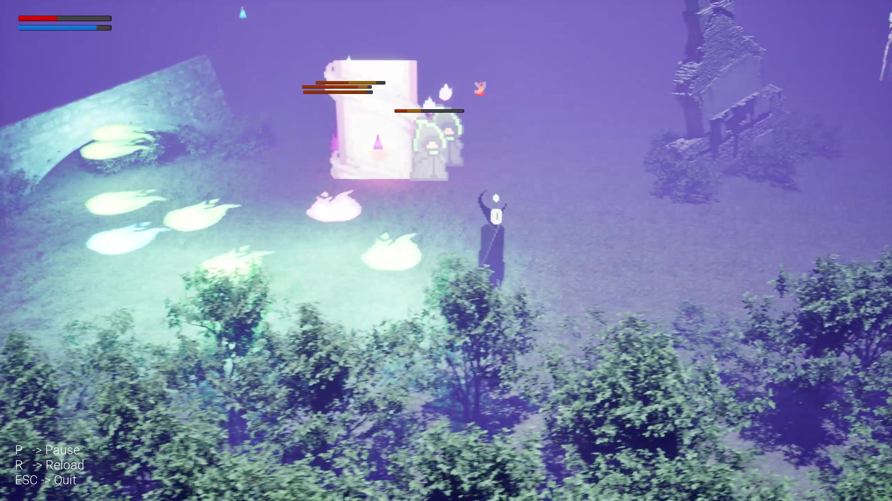
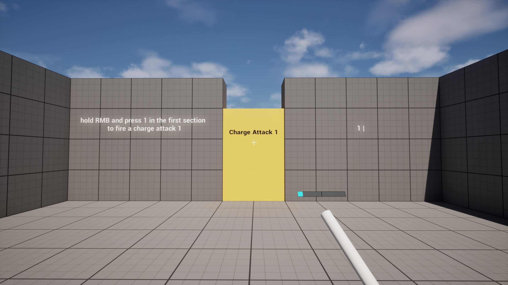
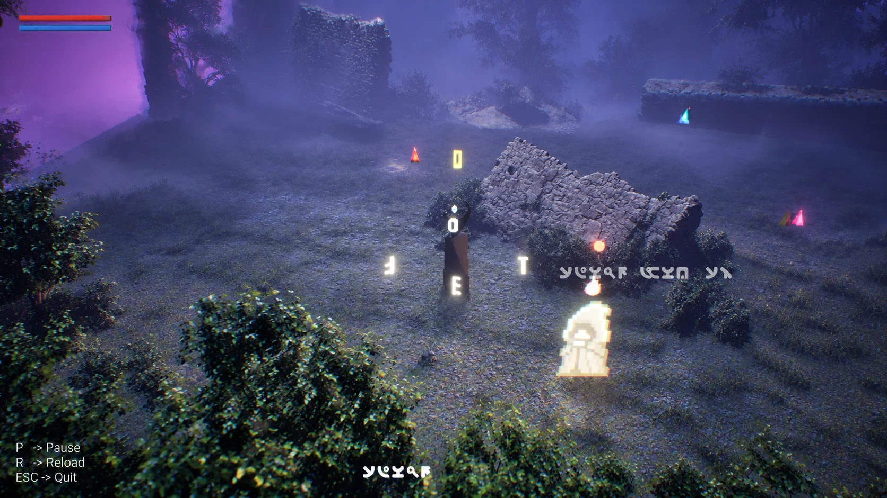
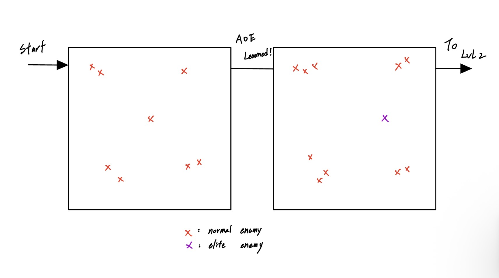

Soul Flame
Single-target poison for sustained pressure on a priority enemy.
A single-player action game built around composing spells in real time and choosing the right combination for each combat situation.
Whispers from the Deep is a single-player action game built around a combinational spellcasting system. Instead of selecting finished spells from a menu, players construct them during combat by combining a spell form with different effects.
My main focus was the core mechanic and combat design: defining how spells are constructed, giving different spell types and status effects distinct combat roles, and designing enemy situations that encourage players to switch between them. I also implemented gameplay and UI systems, ran playtests, iterated on the controls, and contributed to encounter and level design.
Spells are built from a short input sequence. The first input establishes the spell form, while the next input modifies its combat effect, letting the player adapt the same system to different enemy situations.
Single-target poison for sustained pressure on a priority enemy.
AOE paralysis for controlling groups and creating space.
A movement option for repositioning and escaping pressure.
The spell system only works if combat creates reasons to choose between tools. I designed enemies and spell effects around distinct pressures—single threats, groups, sustained damage, interruption, and unsafe positioning—so different spell combinations solve different problems.
The goal was not to create one “best” spell, but to make the right choice depend on the current combat situation.

The first prototype made casting difficult for the wrong reason. Playtests showed that players were spending too much attention managing inputs, so I redesigned the controls while keeping the spell-combination decisions intact.


I kept the encounter layouts straightforward so the focus stayed on the combat system. Rather than adding complex navigation, I used enemy count, grouping, and priority targets to increase pressure between encounters.
In this sketch, the first space uses normal enemies to establish the basic combat rhythm. After AOE becomes available, the next encounter groups enemies more tightly and introduces an elite target, creating a stronger reason to balance crowd control with focused damage.

The project reinforced that complexity is most valuable when it creates meaningful choices. Simplifying the controls gave players more attention to spend on spell selection, positioning, and enemy pressure.
Removing input friction made combat easier to execute without reducing the depth of the spell system.
Spell variety became meaningful when different enemy pressures created clear reasons to choose single-target, AOE, poison, paralyze, or teleport.
Playtesting showed that the original difficulty came from the controls rather than the combat itself, which led to the input redesign.